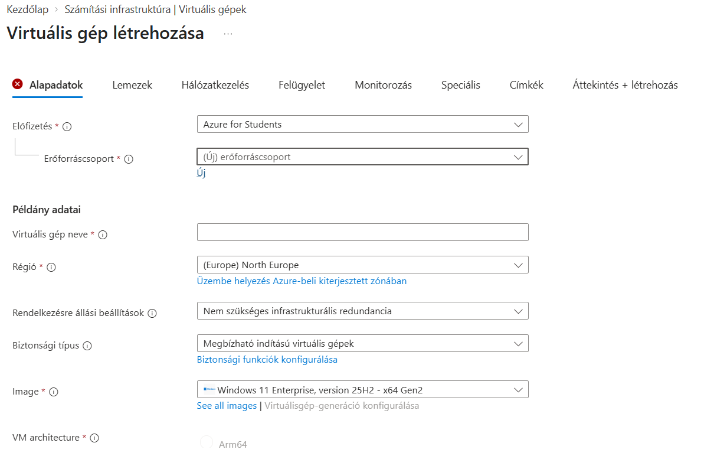
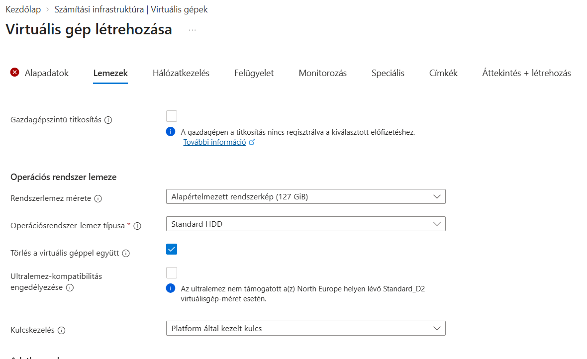
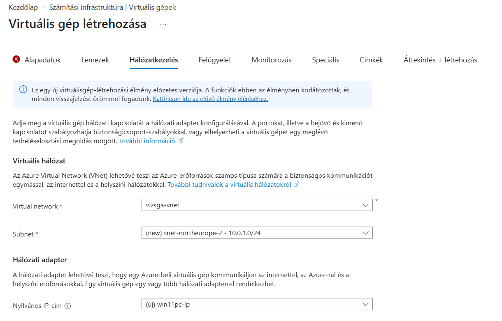
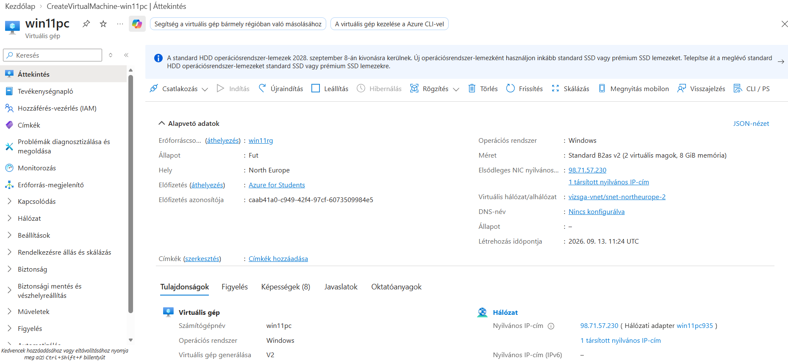
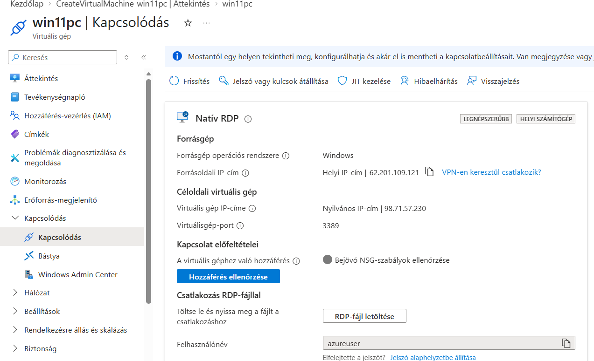
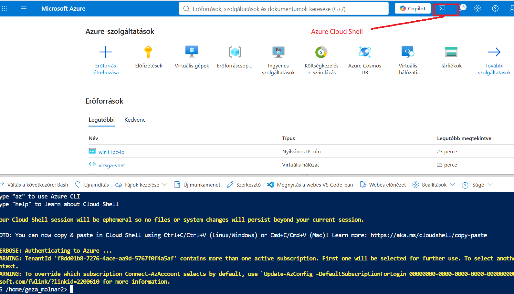

1. hét – Első virtuális gépünk az Azure-ban
Azure Portal → Windows 11 VM → RDP → Cloud Shell → PowerShell → Script → AI
Az első heti gyakorlat során egy Windows 11 virtuális gépet hozunk létre az Azure-ban, majd távoli asztallal kapcsolódunk hozzá, és megismerkedünk az Azure Cloud Shell és az Azure PowerShell alapjaival.
A feladatokat közvetlenül ezen az oldalon követheted, és a válaszokat is itt rögzítheted. A böngésző ezen a gépen automatikusan megőrzi a kitöltött mezőket.
A gyakorlat végén add meg a Neptun-kódodat, majd válaszd a Beadás gombot. Először egy összesítést kapsz a kitöltöttségről, a becsült aktív időről, a hátralévő feladatokról és – ha engedélyezve vannak – az ellenőrzések eredményeiről.
1. feladat – Belépés az Azure-ba
Nyisd meg az Azure Portalt, és jelentkezz be az egyetemi fiókoddal. Ha szükséges, aktiváld az Azure for Students előfizetést.
2. feladat – Virtuális gép: Alapadatok
Nyisd meg a Virtuális gépek (Virtual machines) szolgáltatást, majd kezdd el egy új Azure-beli virtuális gép (Azure virtual machine) létrehozását. Az Alapadatok (Basics) lapon végezd el az alábbi beállításokat.
ⓘ Hol találom a támogatott régiókat?
Az Azure for Students előfizetés korlátozhatja a használható régiókat. Ha az előfizetésedhez tartozik régiókorlátozó szabályzat, annak engedélyezett régióit a Szabályzat (Policy) → Hozzárendelések (Assignments) alatt találod. Ha ilyen hozzárendelés nem jelenik meg, válassz a virtuális gép létrehozásakor elérhető régiók közül.
Rendelkezésre állási zóna (Availability zone): ne válassz rendelkezésre állási zónát.
Biztonság típusa (Security type): válaszd a Megbízható indítás (Trusted launch) lehetőséget.
Rendszerkép (Image): válassz az adott régióban elérhető, Microsoft által kiadott Windows kliens rendszerképet. Elsőként a Windows 11 Enterprise, version 25H2 rendszerképet keresd. Ha ez nem érhető el, választhatsz például Windows 11 Pro vagy Windows 10 Enterprise rendszerképet is. Ne válassz külső gyártó fizetős Marketplace-rendszerképét.
Méret (Size): elsőként válaszd a Standard_B2ls_v2 méretet.
Előfordulhat, hogy a B sorozatú virtuális gép az adott régióban vagy előfizetéssel nem telepíthető. Ha a rendszer elutasítja a választott B sorozatú méretet, válassz egy elérhető D sorozatú gépet, például Standard_D2s_v3 méretet.
Az oldal alján fogadd el a Windows használatához szükséges licencfeltételeket. A többi beállítást hagyd változtatás nélkül.

3. feladat – Virtuális gép: Lemezek
Nyisd meg a Lemezek (Disks) fület. Az operációsrendszer-lemez típusánál (OS disk type) válaszd a Standard HDD lehetőséget. Ez a gyakorlat céljára megfelelő és költségtakarékos választás.
A többi beállítást hagyd változtatás nélkül.

4. feladat – Virtuális gép: Hálózatkezelés
Nyisd meg a Hálózatkezelés (Networking) fület. A gyakorlat során használhatod az Azure által automatikusan létrehozott hálózati beállításokat.
Mielőtt továbblépsz, győződj meg arról, hogy:
- a Virtuális hálózat (Virtual network) ki van töltve;
- az Alhálózat (Subnet) ki van töltve;
- a Nyilvános IP-cím (Public IP) létrehozása engedélyezett;
- az RDP (3389) bejövő port engedélyezett.
A 3389-es RDP-port megnyitására azért van szükség, hogy a későbbi feladatban távolról kapcsolódni tudj a Windows virtuális géphez.
A többi beállítást hagyd változtatás nélkül. A Felügyelet (Management), Monitorozás (Monitoring) és Speciális (Advanced) füleken nem szükséges módosítanod semmit. Lépj tovább az Áttekintés + létrehozás (Review + create) fülre.

5. feladat – Áttekintés, létrehozás és a telepítés ellenőrzése
Nyisd meg az Áttekintés + létrehozás (Review + create) oldalt. Várd meg a sikeres ellenőrzést, majd válaszd a Létrehozás (Create) gombot. Várd meg, amíg az Azure jelzi, hogy a virtuális gép telepítése sikeresen befejeződött, majd nyisd meg a létrehozott virtuális gép Áttekintés (Overview) oldalát.
Keresd meg és add meg az alábbi adatokat.

6. feladat – Csatlakozás a virtuális géphez RDP-vel
Mielőtt csatlakozol, a tantermi gépen nyiss meg egy PowerShell ablakot, és ellenőrizd, hogy elérhető-e a virtuális gép RDP-portja. A <nyilvános-IP-cím> helyére az előző feladatban feljegyzett címet írd:
Test-NetConnection <nyilvános-IP-cím> -Port 3389A parancs részletes működésével később foglalkozunk. Most keresd meg a TcpTestSucceeded sort.
Ezután az Azure Portalon válaszd a Csatlakozás (Connect) → RDP lehetőséget, majd az RDP-fájl letöltése (Download RDP File) lehetőséget. Nyisd meg a letöltött .rdp fájlt.

A virtuális gépre ne az egyetemi hálózati felhasználóneveddel és jelszavaddal próbálj bejelentkezni. Az RDP-kapcsolathoz a virtuális gép létrehozásakor, az Alapadatok (Basics) lapon megadott helyi rendszergazdai felhasználónevet és jelszót használd. Ha a Windows másik fiókot ajánl fel, válaszd a További lehetőségek (More choices) → Másik fiók használata (Use a different account) lehetőséget.
Az első bejelentkezéskor a Windows néhány kezdeti beállítással kapcsolatos kérdést jeleníthet meg, például az adatvédelmi (Privacy) beállításokról. Végezd el a szükséges kezdeti beállításokat, amíg meg nem jelenik a Windows asztal.
A kapcsolat ellenőrzéséhez add meg azt a PowerShell-parancsot, amelyet a tantermi gépen futtattál. A parancsban a virtuális gép tényleges nyilvános IP-címe szerepeljen.
7. feladat – Azure Cloud Shell
Indítsd el az Azure Cloud Shellt, és válaszd a PowerShell környezetet.

Állítsd be aktív előfizetésként az Azure for Students előfizetést a Set-AzContext parancs segítségével.
Az előfizetés nevét idézőjelek között add meg.
8. feladat – Azure-előfizetések listázása
Listázd az elérhető Azure-előfizetéseidet, majd jelenítsd meg csak a Name és State tulajdonságokat.
A PowerShellben a visszakapott objektumok kiválasztott tulajdonságait a Select-Object paranccsal jeleníthetjük meg.
9. feladat – Resource Groupok lekérdezése
Listázd az előfizetésed Resource Groupjait Azure PowerShellből.
10. feladat – Virtuális gépek lekérdezése
Listázd az előfizetésed virtuális gépeit Azure PowerShellből.
11. feladat – A virtuális gép állapota és vezérlése
Kérdezd le a VM állapotát. Ismerkedj meg a Start-AzVM, Stop-AzVM és Restart-AzVM parancsokkal.
Ne állítsd le végleg a VM-et addig, amíg a következő feladatokhoz még szükséged van rá.
12. feladat – PowerShell script kiegészítése
Ebben a feladatban egy részben elkészített PowerShell scriptet fogsz használni. A script lekérdezi a virtuális gép aktuális állapotát és az operációsrendszer-lemez méretét. A kódvázat másold be, és csak a két hiányzó sort egészítsd ki.
A Cloud Shellben indítsd el a beépített szerkesztőt:
code .Hozz létre egy vm-info.ps1 nevű fájlt, másold bele az alábbi kódvázat, egészítsd ki a két hiányzó sort, majd mentsd el. A scriptet ezután így futtathatod:
./vm-info.ps1A PowerShell-scriptek létrehozásával és futtatásával az előadáson is foglalkoztunk.
$resourceGroup = "SAJÁT ERŐFORRÁSCSOPORT"
$vmName = "SAJÁT VM NÉV"
# A virtuális gép állapotának lekérdezése
$vmStatus = __________________________________________
$powerState = ($vmStatus.Statuses |
Where-Object { $_.Code -like "PowerState/*" }).DisplayStatus
Write-Host "A virtuális gép állapota: $powerState"
# A virtuális gép és az OS-lemez adatainak lekérdezése
$vm = Get-AzVM -ResourceGroupName $resourceGroup -Name $vmName
$diskName = $vm.StorageProfile.OsDisk.Name
$disk = Get-AzDisk -ResourceGroupName $resourceGroup -DiskName $diskName
# Az OS-lemez méretének kiírása
_____________________________________________________13. feladat – Ismeretlenebb PowerShell-kód megértése AI segítségével
Az alábbi scriptben olyan PowerShell-elemek is szerepelnek, amelyekkel az előadáson még nem foglalkoztunk. Másold a kódot a Cloud Shellbe, futtasd le, majd használj generatív AI-eszközt a működésének megértéséhez.
Get-AzVM -Status |
Select-Object Name, ResourceGroupName,
@{Name="PowerState"; Expression={
($_.Statuses | Where-Object {$_.Code -like "PowerState/*"}).DisplayStatus
}} |
Format-Table -AutoSizeKérd meg az AI-t, hogy a script működését PowerShellt még csak alapszinten ismerő hallgató számára magyarázza el. Ezután a saját szavaiddal foglald össze, mit csinál a script, és mi a Select-Object szerepe.
14. feladat – Automatikus leállítás beállítása és ellenőrzése
Nyisd meg a létrehozott virtuális gépet az Azure Portalon, és keresd meg az Automatikus leállítás (Auto-shutdown) beállítást.
- Engedélyezd az automatikus leállítást.
- Állítsd a leállítás időpontját minden nap 22:00-ra.
- Az e-mailes értesítést ne engedélyezd.
- Mentsd a beállítást.
Ezután ellenőrizd PowerShellből, hogy az Azure létrehozta-e a megfelelő ütemezést. Egészítsd ki a következő parancsot a megfelelő PowerShell-utasítás nevével, és cseréld le a SAJÁT ERŐFORRÁSCSOPORT szöveget a saját erőforráscsoportod nevére.
________________ `
-ResourceGroupName "SAJÁT ERŐFORRÁSCSOPORT" `
-ResourceType "Microsoft.DevTestLab/schedules" `
-ExpandProperties |
Select-Object -ExpandProperty PropertiesFuttasd a kiegészített parancsot az Azure Cloud Shell PowerShell környezetében. A kimenetben keresd meg a dailyRecurrence és a notificationSettings mezőt.
15. feladat – A virtuális gép leállítása és ellenőrzése
A gyakorlat végén állítsd le a virtuális gépet PowerShell-paranccsal, majd egy másik PowerShell-paranccsal ellenőrizd a gép állapotát. A leállítással elkerülheted, hogy a virtuális gép feleslegesen használja az Azure-kreditedet.
A Microsoft Azure alkalmazást Androidon a Google Play Áruházban, iPhone/iPad eszközön pedig az App Store-ban találod. Telepítés után jelentkezz be azzal a Microsoft-fiókkal, amelyhez az Azure for Students előfizetésed tartozik.
Az alkalmazásban keresd meg a Virtual Machines erőforrásokat, majd válaszd ki a gyakorlaton létrehozott virtuális gépedet. Ellenőrizd az aktuális állapotát. Ha szeretnéd, próbáld ki a VM indítását és leállítását is a mobilalkalmazásból.
Ha újra elindítottad a gépet, a gyakorlat befejezésekor győződj meg róla, hogy az állapota ismét Leállítva (felszabadítva) / Stopped (deallocated).
Ebben a kipróbálható verzióban az AI-ellenőrzés még nem hív valódi AI-szolgáltatást: helyi, szabályalapú visszajelzéssel szimuláljuk a későbbi Azure Function működését. A Beadás gomb szintén csak a beadási folyamatot demonstrálja, még nem küld adatot szerverre vagy GitHubra.
A munkafüzet kísérleti jelleggel becsült aktív időt és feladatonkénti szerkesztési eseményeket is rögzít.
Ez nem pontos munkaidőmérés: ha például az Azure Portal vagy a Cloud Shell másik böngészőlapon van, az ott töltött idő nem feltétlenül számít aktív időnek.
Időmérés: –
Eseménykövetés: –
Becsült aktív idő: 0:00
Szerkesztési események: 0
Első megnyitás: –
Utolsó aktivitás: –
Mentés és beadás
Beadás előtti összesítés
A prototípus továbbra is a böngésző helyi tárhelyére menti a válaszokat, hogy a felület kipróbálható legyen. A végleges szerveres változatban az elsődleges mentés az Azure Functionön keresztül történhet, és a hallgatónak nem kell JSON-fájlt kezelnie.